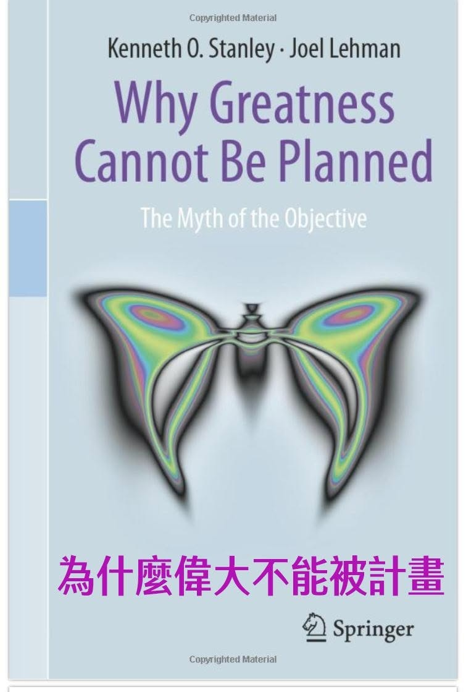

卓越的學習是無心插柳柳成蔭
獵豹學子小二 Ben 超越課綱的 Geogebra 探索
獵豹最傑出的學生從來都不是被課綱約束的！
許多學生長期習慣於被規畫安排好的學習方式，只學老師有教的，或只做老師指定的作業。但在獵豹課程中，學生們的學習寬廣不受限，在好奇心與求知慾的驅使下，常展現超越預期且富有創造力的作品。
學生們遇到挑戰時，獵豹課程鼓勵他們勇於嘗試，善用網路，培養解決問題的能力。不再滿足於僅是消化知識，而是渴望成為更進一步的創作者。
歡迎孩子們加入獵豹！一起在探索中茁壯成長。
文by GGB1高微老師
獵豹學子 Ben 在小二就展現不凡的能力！
在獵豹中年級Geogebra 課程中的 Ben，將在獵豹課程所學到數學、程式知識綜合應用。呈現出超越自身年齡的能力。
Ben所設計的圓形外擺線Geogebra程式已經超越課堂上老師所教與的內容。原先的內容是在直線上，但Ben勇於挑戰，設計出圓上面的版本。
這對於一位小二學生而言是集合知識、毅力、挑戰與不斷嘗試的試煉。獵豹學子之所以優秀，就是因為我們擁有這樣的特質。
而獵豹PK與Geogebra課程中透過老師、同儕所薰陶的，除了知識力外，也正是這樣的特質。
接下來讓我們看看獵豹Geogebra中年級班 Ben 的外擺線Geogebra程式。
https://www.geogebra.org/m/wtyuuxyu
以及 Ben 精彩的等面積移形換影 Geogebra 程式。
https://www.geogebra.org/m/h6zc9cg4
為什麼偉大不能被計畫
作者： 人工智能科學家，OpenAI研究員，ChatGPT的核心研發科學家：Kenneth O. Stanley (Author), Joel Lehman (Author)
內容簡介：
兩位作者持續多年紮根人工智能前沿領域，這本書是他們在科學研究過程中蹦出的意外火花。因為這一全新發現並不是直接回饋於他們本身所處的人工智能領域，而是「無心插柳」的收穫了對人類約定俗成的思維方式與全新顛覆。這一研究打破了人類世界延續多年、難以撼動的、依靠目標和計劃成事的文化基因，真正開啟了人類偉大創新的驚喜之旅。
他們在學校、TED、科研論壇等場合公開演講，讓這一新思維方式影響且激勵了許多人。他們自身也憑藉寫入本書的「尋寶者思維」、「踏腳石模型」與「新奇式探索」等具體思維方法，在人工智能研發領域取得了飛躍式的突破和進展，產生了一系列惠於人類的偉大創造。
---

歡迎參加
高微老師GGB1,一起發揮創造力!
『GGB1、GGB2+3、Scratch3課程 開跑! 』
https://www.facebook.com/groups/695697124716309/permalink/1290753188544030/